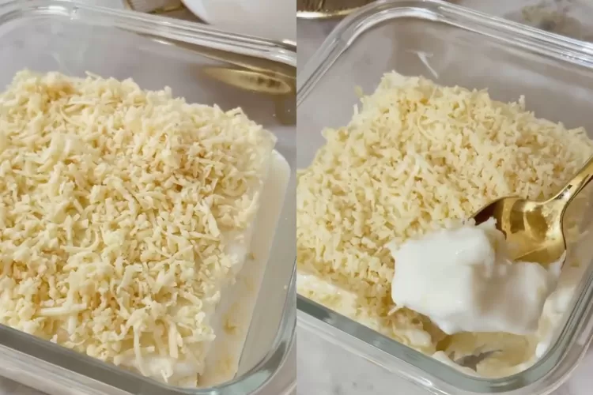

Resep Masakan
1. Nasi Goreng
Bahan-Bahan:
1 butir telur
1 sdm minyak
1 porsi nasi
1 siung bawang putih rajang halus
Secukupnya garam, kaldu, gula, dan kecap manis
Langkah-Langkah:
1. Tumis bawang putih hingga harum
2. Masukan telor orak-arik
3. Masukkan nasi, garam, kaldu, gula, dan kecap
4. Oseng-oseng beberapa saat hingga tercampur rata
2. Perkedel Tahu
Bahan-Bahan:
5 buah tahu
1 buah wortel parut
1 butir telur
3 sdm tepung bumbu
1 batang daun bawang, iris-iris
Secukupnya garam, kaldu, gula
Secukupnya minyak goreng
Langkah-Langkah:
1. Hancurkan tahu menggunakan garpu
2. Masukan wortel parut, daun bawang dan telur, aduk rata
3. Masukkan tepung, garam, kaldu, dan gula.
4. Bentuk bulat adonan tahu
5. Kemudian goreng hingga matang dan sajikan
Resep Kue
1. Setup Roti Tawar
Bahan-Bahan:
5 lembar roti tawar
300ml susu cair
1 butir telur
150gr keju parut
2 sdm gula pasir
1/2 sachet susu kental manis
Langkah-Langkah:
1. Potong 5 lembar roti tawar menjadi potongan dadu, kemudian letakkan di wadah
2. Campurkan dan aduk telur, susu cair, susu kental manis.
3. Tuang adonan ke wadah yang berisi roti.
4. Taburkan parutan keju diatasnya
5. Kukus kurang lebih 10 menit, angkat dan sajikan